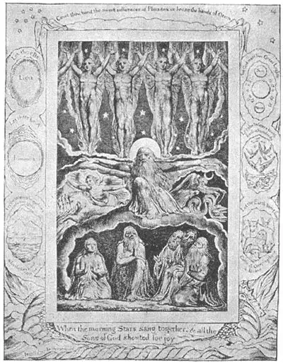

24
THREE ENGLISHMEN WHO WERE DIFFERENT
三个不同的英国人

GHOSTS! Do you like ghost stories? Stories of haunted houses, of chains clanking at midnight, of misty white shapes that you can see right through? Of course the best time to read a ghost story is at night. Then, though you know the story can’t be true, it makes you feel creepy.
But I’ll tell you of one ghost that won’t make you feel creepy. This ghost won’t even make you tremble in your boots. It’s the ghost of a flea. It makes one smile just to think of the ghost of a flea, coming back to haunt, perhaps, the dog who scratched him to death. This flea ghost isn’t in a ghost story. He’s a more unusual ghost than that, for this ghost had his portrait drawn by a celebrated artist.
The artist who drew the picture of “The Ghost of a Flea” was William Blake. He was an Englishman who was living in London at the time the American colonies were fighting their Revolutionary War.
William Blake was very different from any artist I’ve told you about so far. For one thing, besides being an artist, he was a poet. For another thing, William Blake’s pictures are not at all like the pictures of any other artist. For still another thing, William Blake saw visions. A vision is something like a dream—it is a sight a person sees only in his mind. Some people say that Blake was a little crazy, just a little crazy. Perhaps he was only different.
Blake had always wanted to be an artist. He studied engraving for many years, until he became an expert engraver. And then, when he set up in business for himself, he engraved his poems and his pictures together on one plate. This was a new idea that he himself invented. Before then the pictures in a book were engraved on a metal plate, but the words of the book were printed with a printing press. Blake made both pictures and words on the same plate, so the story was really part of the pictures and the pictures were part of the story.
He made and engraved pictures not only for his own poems but for many other books also. The most famous of all his pictures are the ones he made to illustrate the Book of Job in the Bible. These pictures of Job and his troubles are hard to forget, once you have seen them. Every time I think of Job I think of these pictures that Blake made. I can’t help thinking of them.

No.24-1 A PAGE FOR THE BOOK OF JOB V（《约伯记》）BLAKE （布莱克 作）
Courtesy of The University Prints
Most of Blake’s pictures that you see in books look like drawings. That is because they are made up of lines. An engraving has to be made with lines. But Blake generally made a painting for each picture before he engraved it and these paintings show he could use colors as well as lines.
Blake had had new ideas about painting and soon there were other English artists who had new ideas. But before telling you about them I’ll ask you a question.
Have you ever seen a tree in summer time that had brown leaves? A live tree, I mean. Any one would know that a live tree has green leaves. Yet if you saw a picture of a tree painted about the time of Blake you would be surprised to see that it had brown leaves. As I told you, Gainsborough is noted for his landscapes. Perhaps you won’t think him so great a painter when you learn that the leaves of his trees were generally painted brown. Now, those landscape painters must have known that real trees are green, but still they kept painting them brown. Strange, is it not? They must have thought the brown leaves looked better in their pictures.
But after Gainsborough came an English painter named John Constable and after him there were no longer so many brown trees. Constable tried to give his picture the colors he saw in real landscapes. This sounds easier to do than it really is. Even the whitest white a painter can put in a picture isn’t nearly as bright as a dull sky on a rainy day. And if the picture sky can’t be as bright as the real sky is. all the other colors have to be made a little darker than the real colors, to make the sky look bright enough. For the darker the dark parts of a picture are, the brighter the bright parts will look next to them.
Being darker doesn’t keep the picture from being beautiful, but it does keep it from looking exactly like the real landscape. And so if a way could be found to make the colors in a painting look brighter, then artists could make an outdoor picture look more really outdoorsy. And that is what Constable did. He found a way of making paints look brighter. Instead of putting the paint on smoothly, he put it on in little dabs of thick color so that if you touch one of his paintings with your finger it feels rough.
Constable found that when he used little dabs or spots of color, the whole picture became brighter. The old way of painting a green field, for instance, was to paint it all green. Constable’s way was to paint the field with separate little spots of green and yellow and blue. And, strange to say, these make the field look all green, unless you get too close to the picture. When you do get too close you can see the separate spots, but at a little distance the whole field becomes one color—a brighter green than if it had been painted a smooth, solid color in the first place.
My gracious! If you have read all that you are a good reader! And if you have understood it, I think you are a very bright child, whether your teacher thinks so or not.
So we remember Constable for two helpful improvements in landscape painting. He made trees green instead of brown. He made pictures brighter by using rough little spots of paint in place of smooth, solid colors. In Chapter 75 of this book you will find one of his pictures in which there are beautiful trees.
Many people believe the best English painter of all was the landscape painter Turner—Joseph Mallord William Turner. He came nearer than any other painter to catching the brightness of color and light of nature. He loved to paint the sea and the sun.
Now, of course the sun itself is so much brighter than any paint that no one can ever put it in a picture and expect it to look like the real dazzling, brilliant sun. But a painter can paint something that people can see is meant to be the sun. Turner often did something that Claude Lorrain had sometimes done. He painted “into the sun.” That is, he painted a scene with the sun right ahead. Generally he put the sun behind a cloud or in a mist or at sunset so that its brightness would not look too unlike the brightness of the real sun.
We know very well that no painter can find bright enough colors for a sunset, but people who saw Turner’s sunset pictures said they were too bright to be true. They aren’t true, but not because they are too bright, as these people said. It is because they aren’t bright enough.
Turner could also paint the sea better than any one before him. He was a painter of seascapes as well as landscapes. Before he painted the sea he really, studied it—how it looked when it was calm and how it looked in a storm—how it looked in the rain and in sunshine. Once he had himself lashed tight to the mast of a ship in a storm so he could study the sea without being washed overboard.
One of Turner’s most famous paintings is called “The Fighting Téméraire” because that was the name of the old warship in the picture. The Téméraire had become too old for further use and the picture shows her being towed, by a puffing tug, to the dock—to be broken up. It is just sunset and the water of the harbor reflects the gorgeous orange and yellow of the sky. It is the end of the day and the end of usefulness for the old ship that has served her country for many years.
Even in the uncolored picture on the opposite page you can get an idea of the brilliant sunset that Turner painted.
【中文阅读】
鬼啊！你喜欢读鬼故事吗？那些闹鬼的房子、深更半夜叮咚作响的链条以及隐约可见的白色影子的故事。毋庸置疑，读鬼故事的最佳时间是在晚上了。尽管你知道这些故事不是真的，但你还是会感到毛骨悚然。
不过，我要给你讲的这个鬼是不会让你觉得毛骨悚然的。它甚至也不会让你双腿发抖。这是一个关于跳蚤精的故事。人们只要一想到跳蚤精可能会来恐吓，或许小狗 会把它抓死，就会忍不住想笑。这个跳蚤精的故事算不上真正的鬼故事。但这个跳蚤精可非同一般，因为有位著名的画家为它画过画。
画这幅《跳蚤精》的画家是威廉·布莱克。他是英国人，生活在伦敦，那时候美国殖民地正在进行独立战争。
威廉·布莱克和之前我跟你提到的那些画家截然不同。首先，他除了画画，还写诗。其次，威廉的绘画和其他画家的绘画一点都不一样。还有就是，威廉能看到异象。异象和梦境差不多——一个人从内心看到的景象。有人说布莱克有点癫狂。或许他只是与众不同罢了。
布莱克一直都想成为一位画家。他学版画多年，后来终于成为一名专业版画家。接着，他开始自主创业，他试着把他的诗歌和绘画一起刻在一块金属板上。这是他发明的一种新创意。在此之前，书上的图画都是刻在金属板上，但书上的文字则是用印刷机印出来的。布莱克把图画和文字同刻在一块金属板上，这样图画和故事就融为一体，变成故事中有画、画中有故事了。
他不仅为自己的诗歌制作版画，还为其他的书制作版画。他最著名的版画是为《圣经·约伯记》（图24-1）所作的一组插图。只要见过这些插图，你就很难忘记图中的约伯和他所经历种种苦难。
每次想到约伯，我就会情不自禁地想起威廉创作的那些画。
我们在书上看到的布莱克的大部分版画就像是素描，这是因为它们都是由线条构成。版画只能由线条组成。而布莱克在刻版前，通常都会先画好图。这些图画表明他不仅可以画线条，还可以用色彩。
布莱克提出了许多绘画的创新想法，后来其他一些英国画家也提出了许多创新的点子。但在介绍这些画家之前，我得先问一个问题。
你见过哪棵树在夏天时树叶全是褐色的吗？我是说一颗活着的树。大家都知道活树的叶子在夏天是绿色的。但是，如果你看到布莱克那个时代的绘画，你就会惊讶地发现，画上的树叶都是褐色的。我说过，托马斯·庚斯博罗以其风景画著称。不过，如果知道他画的树叶通常都是黄色的，你或许不会觉得他是一位大画家。事实上，这些风景画家们都知道树叶是绿色的，但是，他们还是一直坚持要把树叶画成褐色。很奇怪，是不是？他们可能认为褐色的树叶比绿色的树叶看起来更漂亮吧。
继托马斯·庚斯博罗之后，英国出现了另一位画家，名叫约翰·康斯太勃尔。从他开始，英国的画家再也不把树叶画成褐色了。康斯太勃尔试着按照景物原本的颜色描绘景物。这样做听起来好像很容易，但事实并非如此。画家即使在画中使用最白的白色也还是比不上雨天阴沉天空那样的亮度。如果画中的天空不能像真正的天空那样明亮，那么画面上的其他部分就要比它们真实的颜色暗一点，这样才能把天空衬托得足够明亮。这是因为如果一幅画中暗的部分稍暗一点，那么就会突出亮的部分更亮一些。
画面颜色偏暗不会影响画的美观，但这的确会使画面看起来不像真正的风景那么真实。所以，如果能找到一种办法使画中色彩看起来更亮的话，那么画家就能够把户 外风景画得跟真的一样。这就是康斯太勃尔所做的。他找到了一种方法使颜料看起来更鲜亮。他不是把颜料涂得很均匀，而是把它涂成小而厚的色块。所以，如果用手指触摸他的画，你就会感觉到画面是毛糙不平的。
康斯太勃尔发现，如果把颜料涂成块状或点状，就会使整幅画面更亮一些。例如，要是用老方法画绿色田野，画家就会把田野整个画成绿色。可是，康斯太勃尔的方法却是把田野画成许多独立的小色块，有绿色、黄色，还有蓝色。奇怪的是，这些小色块却使整个田野看起来也还是绿色一片，除非你凑得很近才能看出画面上有不同的色块。但是，只要你稍微往后退一点，就会看到整片田野变成了一种颜色——一种比均匀单色的画面看起来更明亮的绿色。
我的天哪！要是你把整幅画都看完了，那你真是好样的！要是你能看懂它，不管你的老师怎么想，我都认为你是个聪明的孩子。
所以，我们记住康斯太勃尔，是因为他对风景画的画法做了两处改进。首先，他开始把树叶画成绿色，而不是画成像以前的那种褐色。其次，他通过一些凹凸不平的小色块使画面更明亮，而不是使用以前那种老方法把颜料清一色地涂得光滑均匀。在本书第75章中，有他的一幅画（图75-1），画面上的树画得很美。
许多人认为英国最棒的画家要数风景画画家透纳——约瑟夫·马罗德·威廉·透纳。他比任何其他画家都擅长捕捉颜色亮度和自然光线。他喜欢画大海和太阳。
当然，太阳本身比任何一种颜料都要亮得多，所以没哪个画家能把太阳画得跟真正的太阳那样耀眼明亮。但是，画家可以画出一种东西，让人一看就知道是太阳。透纳的这种常用手法有时克劳德·洛兰也使用。他真会画太阳。就是说，他把太阳画在场景的正上方。但通常把它抛在云后，或藏在雾中，要么就赶它下山，这样，画出来太阳的亮度和真正太阳的亮度就不会差得太多了。
我们都很清楚，没有哪个画家能找到和夕阳一样明亮的色彩。但是，凡看过透纳夕阳画的人们都会说他画得太亮了，以至于看起来很不真实。这些夕阳之所以看起来不那么真实，并不是因为像人们所说的那样太亮，而是因为画得还不够亮罢了。
透纳画的大海也比他之前所有的画家画得要好一些。所以，他既是一个风景画家，也是一位海景画家。他在画大海之前，真的进行过观察——看它在风平浪静时、刮起风暴时、雨水中、阳光下分别是什么样。他曾经在一场暴风雨中，把自己紧紧地绑在一艘船的桅杆上，以便在观察大海时不会被海浪卷出甲板。
透纳最有名的一幅画叫做《“无畏号”战舰》，这是因为画中的那艘古老的战舰叫“无畏号”。这艘战舰已经老得不能再使用了。画中这艘战舰被一艘冒着尾气的拖船拉去码头——准备解体。这时正好夕阳西下，海港的水映照出天空绚丽的橙黄色。这是一天的结束，也象征着这艘老战舰的寿终正寝——为国服役多年后，不能再发挥作用了。
甚至在另页的那张黑白画上，也能看出透纳笔下夕阳的亮度。